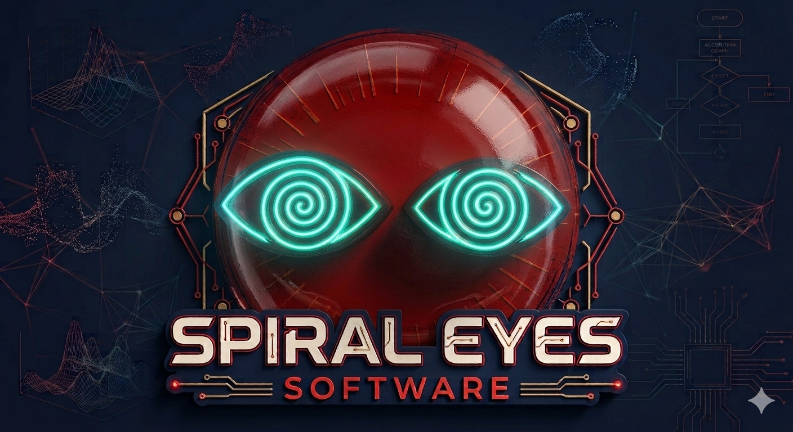
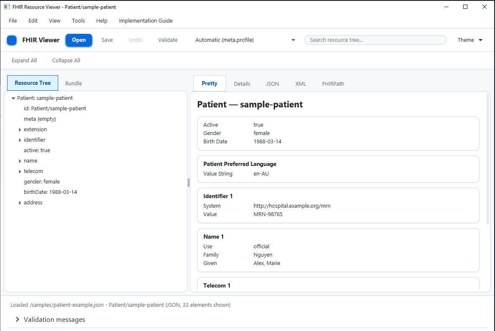

◇
Explore
Browse FHIR resources in a visual tree instead of digging through raw JSON.

DEVELOPER TOOLS · HEALTHCARE · INTEROPERABILITY
Tools for working with FHIR, HL7, APIs and the complicated systems behind modern healthcare.
A modern desktop FHIR resource explorer for developers, architects, testers and interoperability engineers.
Browse FHIR resources in a visual tree instead of digging through raw JSON.
Check resources against Implementation Guides and profiles.
Work with FHIR servers through standard and vendor-specific APIs.

Tools for developers working with complex data and complex systems.
Desktop tools for exploring, validating and working with FHIR resources.
Learn more →Extensible integrations for Firely, Smile CDR and other FHIR servers.
Learn more →Small utilities designed to make healthcare interoperability easier.
Learn more →Spiral Eyes Software builds useful developer tools and shares them whenever possible.
View on GitHub →Software is complicated. Healthcare interoperability is really complicated. Spiral Eyes Software builds tools that make complex systems easier to see, understand and work with.